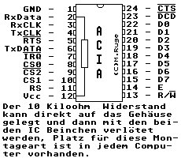

Previous
Next
TOC
Das "Schnarren" von ATARIs ohne Tastatur kann durch einen Wider-
stand von 10 kOhm von Pin 2 nach Pin 12 des Tastatur-ACIA (MC6850)
beseitigt werden. Dem MIDI-ACIA schadet dieser Widerstand nicht,
nützt aber auch nicht. Sollte am Pin 2 des Tastatur-ACIA jedoch
bereits ein Widerstand gegen Ground hängen, so muß dieser beseitigt
werden. Sinnvollerweise lötet man ihn von Ground ab und an +5V an,
wie hier bereits erwähnt wurde.

260 und 520 ST Platinenbezeichnung/position U21
1040STF und 1040STFM Platinenbezeichnung/position U21
1040STE Platinenbezeichnung/position U201
MegaST Platinenbezeichnung/position U15
TT030 Platinenbezeichnung/position U301
Falcon030 Platinenbezeichnung/position U52
Kapitel Warum 'schnarrt' der Computer, Seite 1